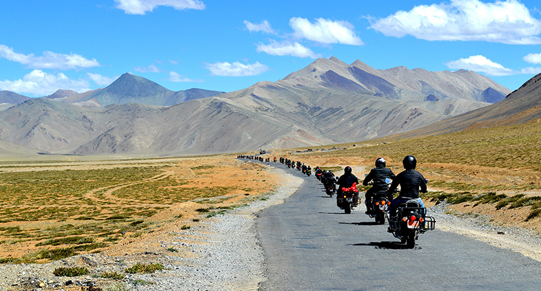
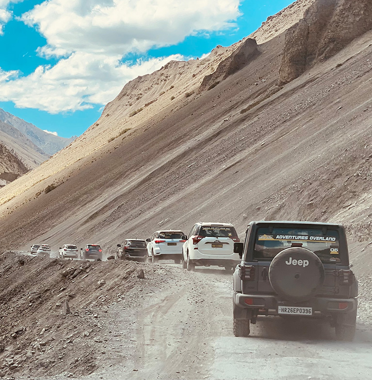

HOW TO REACH

BY ROAD
There are two road routes to Leh Ladakh- one through Manali in Himachal Pradesh and the second one through Srinagar. Ladakh is 434 km from Srinagar and 494 km from Manali.
To reach Leh by road you can hire a cab or a jeep or board a JKSRTC bus, both deluxe and ordinary, run from Kargil and between Leh and Srinagar on regular and frequent intervals. Alternatively, you can embark on a bike trip to Leh from Srinagar, Manali, Delhi or Chandigarh depending upon the time you have. You can only travel to Ladakh by road between May to September as during the winter months the highways are shut due to heavy snowfalls.
I. TRAVELLING BY BIKE
There are a few of you who are waiting for that amazing bike trip to Ladakh. It is said that the beauty of Ladakh can be best enjoyed through bike trip. Riding through the amazing beauty of the region is something which will be cherished by you every day. There are two different routes that lead to Ladakh- one from Srinagar and the other from Manali: Srinagar to Leh and Manali to Leh.
Route 1: Srinagar to Leh
If you are travelling from Srinagar then you will be covering a distance of 434 kms, this trip lets you understand the true majesty of Mother Nature’s creations.
Route: Srinagar – Sonmarg – Zozi La – Drass – Kargil – Mulbek – Lamayaru – Saspol – Leh
Route 2: Manali to Leh
If you are taking the route of Manali to Leh then you will be covering a distance of 490km, while enjoying the beautiful vistas of the region.
Route: Manali – Rohtang – Gramphu – Kokhsar – Keylong – Jispa – Darcha – Zingzingbar – Baralacha La – Bharatpur – Sarchu – Gata Loops – Nakee La – Lachulung La – Pang – Tanglang La – Gya – Upshi – Karu – Leh
Experiencing the best of your amazing bike trip, check out our ultimate guides that include the best time for Ladakh bike trip and everything you should know about bike rentals in Leh Ladakh.
For your best experience in the mountains, Royal Enfields are the best bike for your daring trip. These bikes are great and easily cruise on highways as well as the rocky terrain of Ladakh.It is advisable for you to choose a bike with higher displacements which will put less weight on the motor and you can cover bigger distances. Select the bike which suits you the best and have one of the best Ladakh road trip of your life.
Price: The approximate price for Bullet 500cc starts from Rs 1700 per day.
Bike Trip Expedition: Manali to Leh Bike Trip from Delhi
Where can I get a bike from: Rent a bike from Manali.
II.TRAVELLING BY JEEP
Heading to Leh is unquestionably an adventure. In the event that you are arranging for a Jeep ride then you will be stunned by the streets to Ladakh. Ladakh is 434 km from Srinagar and 494 km from Manali.
You can set out on a jeep ride to Leh from Srinagar, Manali or Chandigarh relying on the time you have. The highways are closed because of substantial snowfalls amid the winter months. Along these lines, you can just go to Ladakh by street between May to September.
The most sensational piece of this road trip is while crossing 11,500 feet 3,505 m high Zoji-La, the pass in the Great Himalayan Wall that serves as the door to Ladakh if you are travelling to Ladakh through Kargil from Kashmir Valley. Manali-Leh roads have been filling in as the other way to reach Ladakh.
Various Leh high passes fall en route among which the most elevated one known as Tanglang-La is world’s second most astounding motorable go at a height of 17,469 feet/5,235m.
Price:The approximate price for Malai to Leh Jeep Safari will be around Rs 32,000